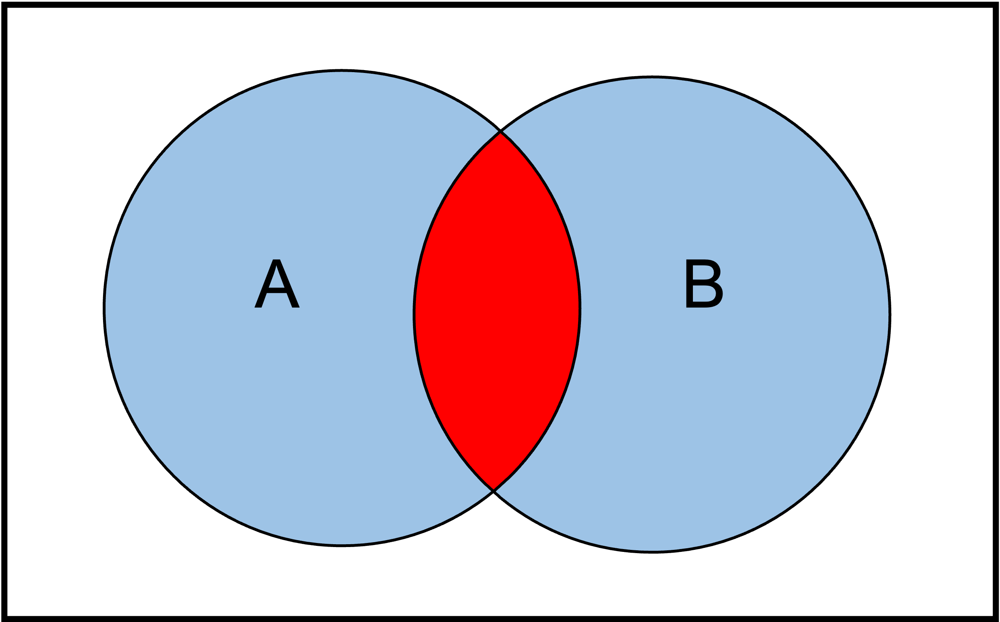
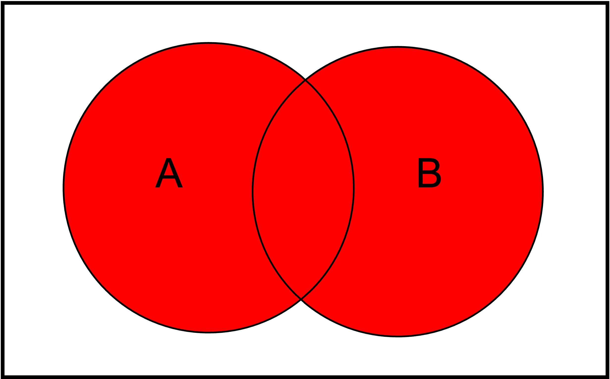
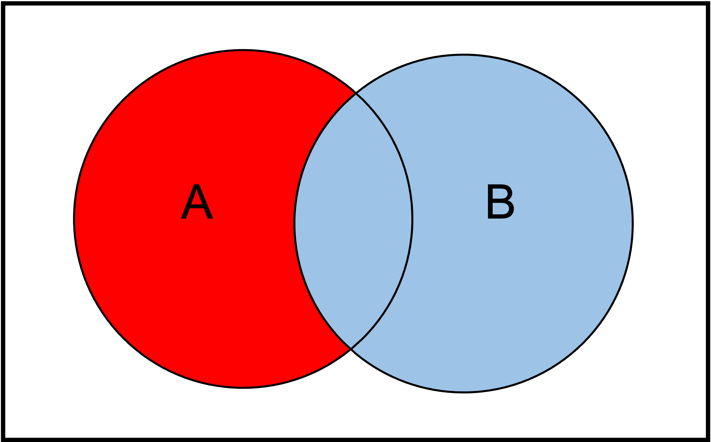
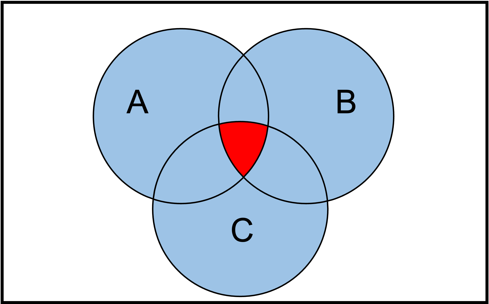
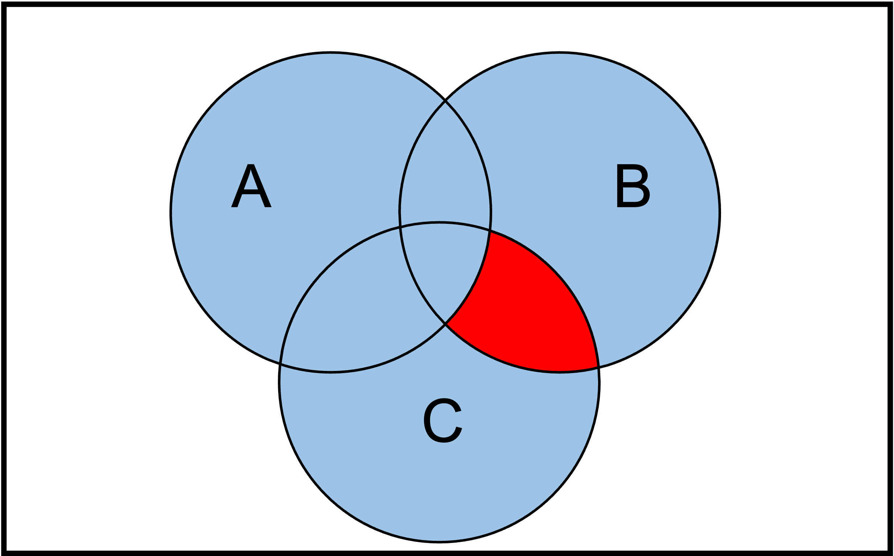

Kapitel 1 - Mengenlehre#
1. 0 Lernziele#
In diesem Kurs lernen wir die folgenden Dinge:
Lernziele
Mengenlehre-Grundlagen: Sie verstehen die Schreibweise, Terminologie und die wichtigsten Zahlenmengen in der Mengenlehre.
Mengenoperationen: Sie beherrschen die grundlegenden Mengenoperationen wie Schnitt, Vereinigung, kartesisches Produkt und Potenzmenge.
Mächtigkeit und Zahlenbeschreibung: Sie können die Mächtigkeit von Mengen bestimmen und Zahlen mithilfe von Mengen darstellen.
Prinzip der Vollständigen Induktion: Sie können selbstständig Beweise mit dem Prinzip der vollständigen Induktion durchführen.
Grundlagenkrise und Paradoxien: Sie verstehen die historischen Herausforderungen in der Mathematik, insbesondere die Paradoxien in der Mengenlehre, und können diese mit den Zermelo-Fraenkel-Axiomen in Verbindung bringen.
Selbstständiges Arbeiten: Sie haben die Fähigkeit, selbstständig Beweise durchzuführen und ein tiefes, intuitives Verständnis für Mengen und ihre Operationen zu entwickeln.
1.1 Definition einer Menge#
Zu erklären, was eine Menge wirklich ist, ist gar nicht so einfach, besonders wenn man es exakt mathematisch definieren will. Intuitiv ist es jedoch verständlicher. Eine bekannte Definition stammt von Georg Cantor, dem Begründer der Mengenlehre.
Definition 1
“Eine Menge ist eine Zusammenfassung bestimmter wohlunterschiedener Objekte unserer Anschauung oder unseres Denkens - (welche die Elemente der Menge genannt werden) - zu einem Ganzen.”
Das klingt in der Tat nicht sehr mathematisch exakt, aber soll uns zu Beginn erstmal reichen.
Wichtige Folgerungen aus der obigen Definition sind:
Die Objekte einer Menge heißen Elemente
Die Elemente müssen alle verschieden sein
In der Definition von Cantor spielt die Reihenfolge keine Rolle
Example 1
Folgendes sind Beispiele für Mengen:
\(A:=\{0,1,2,3,4\} \)
\(B:=\{a,b,c,d,e,f,g\} \)
\(C:=\{ 👍, 👮 , 🔨\} \)
Beobachtungen:
Wie Sie sehen, können Elemente einer Menge ganz unterschiedlicher Natur sein. Sie können Zahlen, Buchstaben oder auch Zeichen sein. Wichtig ist nur, dass sie unterscheidbar sind und eindeutig.
Um eine Menge aus endlich vielen Elementen hinzuschreiben nutzen wir geschweifte Klammern (\( \{ \} \)).
Frage:
Kann ein Element einer Menge auch selbst eine Menge sein?
Antwort:
Ja! Denn Mengen sind eindeutig und unterscheidbar. Damit können Sie auch selbst Mengen sein. Wir werden am Ende dieses Kapitels sogar sehen, dass wir die komplette Mathematik auf der Grundlage von Mengen aufbauen können.
Example 2
Folgendes sind Beispiele für Mengen von Mengen:
\(D:=\{ \{0,1\} ,\{2,3,4\}\} \)
\(E:=\{\{ 0,1,2,3,4 \} \} \)
1.2 Notation#
Leere Menge#
Eine ungewöhnliche Menge ist die Folgende:
Definition 2
Diejenige Menge, die kein Element enthält, wird die leere Menge genannt und mit
bezeichnet.
Elemente einer Menge#
Als nächstes führen wir das Symbol \(\in \) und \(\notin\) ein.
Definition 6
Wir schreiben \(x\in M\), falls \(x\) ein Element von \(M\) ist. Wir schreiben \(x\not\in M\), falls \(x\) kein Element von \(M\) ist.
Example 4
Betrachten wir die folgenden Beispielmengen:
\(A:=\{0,1,2,3,4\}\)
\(B:=\{a,b,c,d,e,f,g\} \)
\(C:=\{ 👍, 👮 , 🔨\} \)
\(D:=\{ \{0,1\} ,\{2,3,4\}\} \)
\(E:=\{\{ 0,1,2,3,4 \} \} \)
Zur Zugehörigkeit von Elementen zu Mengen gilt:
\(0 \in A\), da die Zahl 0 in der Menge \(A\) enthalten ist.
\(5 \notin A\), da die Zahl 5 nicht in der Menge \(A\) enthalten ist.
\(a\in B\), da der Buchstabe a in der Menge \(B\) enthalten ist.
\(\{ 0,1,2,3,4 \} \in E\), da die Menge \(\{ 0,1,2,3,4 \}\) als Element in der Menge \(E\) enthalten ist.
\(\{0,1\} \in D\), da die Menge \(\{0,1\}\) als Element in der Menge \(D\) enthalten ist.
Im obigen Beispiel sehen wir, dass die Klammern \(\{ \}\) eine große Rolle Spielen. Elemente einer Menge sind eben nur diejenigen Objekte die genaue eine Hierarchieebene unterhalb der Menge sind.
Teilmenge#
Als nächstes definieren wir den Begriff der Teilmenge \(\subset \).
Definition 6
Seien A,B zwei Mengen. Wir schreiben
genau dann wenn für jedes Element \(a\in A\) auch gilt \(a\in B\).
Example 4
Betrachten wir unsere Beispielmengen
\(A:=\{0,1,2,3,4\} \)
\(B:=\{a,b,c,d,e,f,g\} \)
\(C:=\{ 👍, 👮 , 🔨\} \)
\(D:=\{ \{0,1\} ,\{2,3,4\}\} \)
\(E:=\{\{ 0,1,2,3,4 \} \} \)
Es gilt dann:
\(\{0\}\subset A\).
\(\{\{0,1 \}\}\subset D\)
\(E\subset E.\)
Gleichheit zweier Mengen#
Mithilfe der Teilmenge können wir ebenso die Gleichheit zweier Mengen definieren.
Definition 6
Seien A,B zwei Mengen. Wir schreiben
genau dann wenn
Die obige Definition mag etwas unnatürlich wirken, aber sie hilft uns die oben beschriebenen Eigenschaften, dass es bei einer Menge nicht um die Reihenfolge und die Dopplung von Elementen geht.
Aufgabe:
Zeigen Sie auf Grundlage der Definition von Gleichheit, dass
Kardinalität einer Menge#
In vielen Fällen interessiert uns wie viele verschiedene Elemente eine Menge enthält. Dies können wir zunächst nur für endliche Mengen, also Mengen mit endlich vielen Elementen definieren.
Definition 6
Sei \(A\) eine Menge. Dann bezeichnen wir mit \(\vert A \vert\) die Anzahl der Elemente von \(A\) und nennen diese Zahl die Kardinalität von \(A\).
1.3 Definition von Mengen#
In diesen Abschnitt wollen wir uns genauer anschauen, welche Möglichkeiten es gibt mathematisch präzise Mengen zu bilden. Wir haben das schon für endliche Mengen gesehen. Hier können wir einfach alle Elemente hinschreiben. Es gibt aber auch unendliche Mengen, die einer gewissen Regel gehorchen. Hierfür brauchen wir eine Sprache bzw. Syntax um diese Mengen formulieren zu können.
Endliche Mengen#
Wie schon erwähnt können wir endliche Mengen durch die Nutzung der geschweiften Klamern \(\{\) und \(\}\) und die Angabe der Elemente, getrennt durch Kommata angeben. Dabei spielt wie erwähnt die Reihenfolge der Elemente sowie die doppelte Nennung der Menge keine Rolle.
Example 5
Betrachten wir unsere Beispielmengen
$A:={0,1,2,3,4}
\(B:=\{a,b,c,d,e,f,g\} \)
\(C:=\{ 👍, 👮 , 🔨\} \)
\(D:=\{ \{0,1\} ,\{2,3,4\}\} \)
\(E:=\{\{ 0,1,2,3,4 \} \} \)
Unendliche Mengen mit Regeln#
Nehmen wir an, wir haben bereits eine Grundmenge (z.B. \(\mathbb{N}\)). Jetzt wollen wir aus dieser Grundmenge eine neue Menge definieren. Zum Beispiel die Menge aller geraden Zahlen.
Dann können wir das mit folgender Notation:
Wichtig:
Auf der Linken Seite müssen Sie die Grundmenge angeben
Auf der Rechten Seite steht die Regel
Die Elemente der so entstanden Menge sind alle Elemente aus der Grundmenge, die die Regel erfüllen.
Example 6
\(M= \{ n\in \mathbb{N} \vert n>3\} \)
\(N= \{ n\in \mathbb{N} \vert n<3 \}= \{0,1,2\}\)
1.4 Zahlenmengen#
In der Mathematik begegnen uns ständig verschiedene Arten von Zahlen, die jeweils ihre eigenen Eigenschaften und Anwendungen haben. Diese Zahlen werden in speziellen Mengen kategorisiert, die uns helfen, ihre Beziehungen zueinander zu verstehen und sie effektiv in verschiedenen mathematischen Kontexten zu verwenden. Die Symbole \(\mathbb{N}, \mathbb{Z},\mathbb{Q}, \mathbb{R}\) und \(\mathbb{C}\) repräsentieren einige der wichtigsten dieser Mengen. Jede dieser Mengen hat ihre eigene Geschichte, ihre eigenen Charakteristika und spielt eine zentrale Rolle in verschiedenen Bereichen der Mathematik, von der Grundlagenforschung bis hin zu fortgeschrittenen Anwendungen. In diesem Kapitel werden wir uns einen Überblick über diese grundlegenden Zahlenmengen verschaffen und ihre Bedeutung in der Mathematik verstehen.
Die natürlichen Zahlen \(\mathbb{N}\)#
Die natürlichen Zahlen sind die Menge der positiven ganzen Zahlen. Die Elemente sind also:
Ob die \(0\) in der Menge der natürlichen Zahlen enthalten sind, hängt vom Geschmack der einzelnen Person ab. In meiner Vorlesung wird die \(0\) enthalten sein.
Um Klarheit zu schaffen, insbesondere wenn es wichtig ist zu betonen, dass die 0 enthalten ist, verwendet man manchmal die Bezeichnung \(\mathbb{N}_0\) für die Menge der natürlichen Zahlen einschließlich der 0.
Die ganzen Zahlen \(\mathbb{Z}\)#
Die Menge der ganzen Zahlen sind wohl selbsterklärend. Die Elemente von \(\mathbb{Z}\) sind alle ganzen Zahlen. Insbesondere auch die negativen Zahlen.
Die rationalen Zahlen \(\mathbb{Q}\)#
Die Menge der rationalen Zahlen sind alle diejenigen Zahlen, die als Bruch zweier ganzer Zahlen dargestellt werden können. Also von der Form \(n/m\) mit \(n,m \in \mathbb{Z}\) mit \(m\neq 0\).
Die reellen Zahlen \(\mathbb{R}\)#
Die reellen Zahlen sind eine Erweiterung der rationalen Zahlen und umfassen sowohl rationale als auch irrationale Zahlen. Irrationale Zahlen sind solche, die nicht als Bruch zweier ganzer Zahlen dargestellt werden können. Zunächst einmal hat man lange Zeit gedacht, es gibt sie gar nicht. So glaubten die Pythagorärer, dass jede Zahl als Bruch oder ganze Zahl darstellbar ist. Wie wir heute wissen, gilt das für Zahlen wie \(\sqrt{5}\) oder \(\pi\) nicht. Doch was genau sind reelle Zahlen. Wir werden in diesem Kurs keine genaue Definition geben können, sondern lediglich eine Intuition.
Intuition:
Zahlenstrahl: Die reellen Zahlen können als Punkte auf einem unendlich ausgedehnten Zahlenstrahl visualisiert werden. Jeder Punkt auf diesem Strahl entspricht einer eindeutigen reellen Zahl.
Dezimalzahlen: Reelle Zahlen können als endliche oder unendliche Dezimalzahlen dargestellt werden. Während rationale Zahlen immer eine wiederkehrende Dezimaldarstellung haben, haben irrationale Zahlen eine nicht wiederkehrende, unendliche Dezimaldarstellung.
Zusammenhang zwischen den verschiedenen Zahlenmengen#
Es gilt
Intervallschreibweise#
Für die reellen Zahlen gibt es weitere nützliche Teilmengen, die eine Abkürzung besitzen. Die sogenannten Intervalle. Intervalle werden durch zwei Grenzpunkte \(a,b\in \mathbb{R}\) definiert. Wichtig ist es aber darüber hinaus anzugeben, ob der Punkt selbst im Intervall enthalten ist.
Es gibt auch Intervalle, die nur einen Grenzpunkt besitzen und sich zur anderen Seite bis ins unendliche erstrecken.
Wir können die Intervalle wie folgt schreiben und definieren:
Seien also im Folgenden \(a,b\in \mathbb{R}\). Dann definieren wir die folgenden Mengen:
\([a,b]:=\{x\in \mathbb{R} \ \vert \ x\geq a \text{ und } x\leq b\}\)
\((a,b]:=\{x\in \mathbb{R} \ \vert \ x> a \text{ und } x\leq b\}\)
\([a,b):=\{x\in \mathbb{R} \ \vert \ x\geq a \text{ und } x< b\}\)
\((a,b):=\{x\in \mathbb{R} \ \vert \ x> a \text{ und } x< b\}\)
\((-\infty,b):=\{x\in \mathbb{R} \ \vert \ x< b\}\)
\((-\infty,b]:=\{x\in \mathbb{R} \ \vert \ x\leq b\}\)
\((a,\infty):=\{x\in \mathbb{R} \ \vert \ x>a\}\)
\([a,\infty):=\{x\in \mathbb{R} \ \vert \ x\geq a\}\)
1.5 Mengenoperationen#
Wir kennen nun schon ein paar Mengen und wir wissen, wie wir mit Hilfe von Regeln weitere Mengen konstruieren können. In diesem Abschnitt wollen wir lernen, wie wir zwei oder mehrere Mengen miteinander kombinieren können, um so weitere Mengen zu erhalten.
Die Schnittmenge#
Die Schnittmenge von zwei Mengen \(A\) und \(B\) ist diejenige Menge, die sowohl die Elemente von \(A\) als auch die von \(B\) enthält.
Mathematisch ausgedrückt können wir folgendes schreiben:
Definition 7
Seien \(A\) und \(B\) zwei Mengen, dann definieren wir \(A\cap B\) wie folgt:
Example 7
Sei \(A=\{0,1,2,3,4\}\) und \(B=\{3,4,5,6 \}\). Dann gilt
Frage:
Sei
\(D:=\{ \{0,1\} ,\{2,3,4\}\} \)
\(E:=\{\{ 0,1,2,3,4 \} \}\). Was ist \(E\cap D\)?
Antwort:
\(E\cap D=\emptyset\). \(D\) besitzt die Elemente \(\{0,1\}\) und \(\{2,3,4\}\) und \(E\) besitzt nur das Element \(\{ 0,1,2,3,4 \}\). D.h. beide Mengen besitzen kein gemeinsames Element.
Die Vereinigung#
Die Vereinigung von zwei Mengen \(A\) und \(B\) enthält alle Elemente die in \(A\) oder \(B\) enthalten sind.
Das heißt
Definition 8
Seien \(A\) und \(B\) zwei Mengen so definieren wir \(A\cup B\) durch folgende Eigenschaft:
Example 8
Sei \(A=\{0,1,2,3,4\}\) und \(B=\{3,4,5,6 \}\). Dann gilt
Example 9
Frage:
Sei
\(D:=\{ \{0,1\} ,\{2,3,4\}\} \)
\(E:=\{\{ 0,1,2,3,4 \} \} \) Was ist \(E \cup D\)
Antwort:
\(D\cup E =\{ \{0,1\} ,\{2,3,4\},\{ 0,1,2,3,4 \} \}\)
Differenz#
Wir können die Differenz von zwei Mengen \(A\) und \(B\) bilden. Also diejenige Menge, die nur Elemente aus A enthält, die nicht in \(B\) enthalten sind.
Definition 9
Seien \(A\) und \(B\) zwei Mengen so definieren wir \(A\setminus B\) durch folgende Eigenschaft:
Example 10
Sei \(A=\{0,1,2,3,4\}\) und \(B=\{3,4,5,6 \}\). Dann gilt
Das Kartesische Produkt#
Wir können auch das Produkt von zwei Mengen \(A\) und \(B\) definieren als die Menge aller geordneten Paare von \(A\) und \(B\).
Genauer definieren wir:
Definition 10
Seien \(A\) und \(B\) zwei Mengen so definieren wir das kartesische Produkt \(A\times B\) wie folgt:
Bemerkungen:
Im Gegensatz zu Elementen einer Menge, spielt bei geordneten Paaren die Reihenfolge der Objekte sehr wohl eine Rolle. So gilt für \(a\neq b\) das
Frage:
Wie viel Elemente besitzt \(A\times B\). Also was ist \(\vert A\times B \vert\) .
Antwort:
Es gilt \(\vert A\times B\vert = \vert A \vert \cdot \vert B\vert.\)
Potenzmenge#
Die Potenzmenge einer Menge ist die Menge aller Teilmengen. Genauer können wir auch hier die Potenzmenge wie folgt definieren.
Definition 11
Sei \(A\) eine Menge so definieren wir die Potenzmenge \(\mathcal{P}(A)\) wie folgt:
Example 11
Sei \(A:=\{0,1,2,3,4\}\). Was ist nun \(\mathcal{P}(A)\)?
Nun zunächst einmal gibt es die Teilmengen mit nur einem Element:
Dann gibt es noch die Teilmengen mit zwei Elementen:
Dann die Teilmengen mit drei Elementen:
Dann die Teilmengen mit vier Elementen:
Dann die Teilmengen mit fünf Elementen:
Fehlt nun noch etwas? In der Tat es gibt noch die Teilmenge mit null Elementen: \(\emptyset\).
Damit ergibt sich:
Frage:
Wie groß ist \(\vert \mathcal{P} (A)\vert\) ?
Antwort:
Es gilt \(\vert \mathcal{P} (A)\vert=32\).
Aber \(32=2^5\) und \(A\) besitzt genau \(5\) Elemente.
Ist das ein Zufall? Vermutlich nicht.
Theorem 1
Sei \(A\) eine endliche Menge. Dann gilt für die Kardinalität der Potenzmenge folgende Formel
Proof. Wir beweisen die Aussage in dem wir herleiten wie viel Möglichkeiten es gibt eine Teilmenge \(U \subset A\) zu konstruieren. Wir iterieren hierfür über die Anzahl \(n\) der Elemente von \(A\), d.h. \(\vert A \vert =n\). Für jedes Element \(a\in A\) gibt es zwei Möglichkeiten:
\(a\in U\)
\(a\notin U\).
Damit gibt es
Möglichkeiten.
Venn Diagramme#
Wir können viele der Grundoperationen von Mengen auch graphisch darstellen durch sogenannten Venn Diagramme.
Dabei stellen Kreise Mengen dar und wir können Schnitte zwischen Mengen als den überlappenden Teil der Kreise interpretieren.
Hier ein paar Beispiele
Schnittmenge zweier Mengen \(A\cap B\):

Vereinigung zweier Mengen \(A\cup B\):

Differenz zweier Mengen \(A\setminus B\):

Das Gleiche können wir auch mit drei Mengen und mehr machen.
Hier nochmal ein illustratives Beispiel für den Schnitt von drei Mengen

Frage:
Bestimmen sie die Folgende in rot gekennzeichnete Menge 
Antwort:
Die Rote Menge ist der Schnitt von \(B\) und \(C\) ohne die Menge \(A\). Also
1.6 Natürliche Zahlen als Menge#
Was sind eigentlich Zahlen? Das ist eine philosophische Frage, die schon viel diskutiert wurde. Falls Sie sich näher dafür interessieren, lesen Sie zunächst diesen Wikipedia Artikel
Eine erste zufriedenstellende Antwort auf die Frage, was die Zahlen sind hat Frege (1884) in Grundlagen der Arithmetik gegeben. Sein Ziel in dem Buch ist es die Zahlen mathematisch zu definieren. Oder in Freges Worten:
„So ist auch die Zahl etwas Objektives. […] So verstehe ich unter Objektivität eine Unabhängigkeit von unserem Empfinden, Anschauen und Vorstellen […].“ (§ 26)
Definition der natürlichen Zahlen#
Freges Grundideen für die Konstruktion der natürlichen Zahlen blieben erhalten, doch seine Ideen und die darauffolgende Entdeckung der sogenannten Russel’schen Antinomie führten zu einer Grundlagenkrise der Mathematik (mehr dazu im nächsten Abschnitt)
Die grundlegende Idee von Frege ist die, dass Zahlen aus Mengen abgeleitet werden können. Er hält Mengen für objektiver als Zahlen, worüber man sicher auch streiten kann.
Dennoch die Konstruktion der natürlichen Zahlen aus Mengen hat sich in der Mathematik weitestgehend durchgesetzt. Die Standardkonstruktion nutzt die Idee, dass wir sehr viele Mengen nur mit Hilfe der leeren Menge bilden können.
Zunächst definieren wir
Wie können wir nun weitere Mengen bilden? Wir können die Menge, die die leere Menge enthält bilden:
Das war schonmal eine guter Trick. Wie gehen wir nun weiter? Wir könnten nun immer mehr Mengenklammern machen, also als nächstes \(\{\{\emptyset\}\}\). Damit ist die Addition von Zahlen aber schwieriger zu definieren. Es hat sich deshalb folgende Konstruktion durchgesetzt:
Jetzt können wir die Zahl \(n\) sehr einfach durch die Zahlen \(1,2,\dots, n-1\) definieren als:
D.h. die Elemente der Menge \(n\) sind die Mengen \(1,\dots,n-1\).
Rechnen mit natürlichen Zahlen#
Zahlen sind nun aber vor allem dadurch charakterisiert, dass man mit ihnen rechnen kann. Es stellt sich also die Frage, wie wir nun die Addition dieser Mengen definieren können. Die Idee ist, dass wir definieren was wir mit \( \_ + 1\) meinen. Wir nennen diese Funktion \(S(n)\) oder auch Nachfolgerfunktion
Wir definieren
Diese Definition stimmt auch mit obiger Konstruktion der natürlichen Zahlen überein.
Wir können nun uach \(n+2\) als \(S(S(n))\) definieren und so weiter. Insgesamt sind wir mit dieser Konstruktion in der Lage, beliebige Addition durchzuführen.
1.7 Die vollständige Induktion#
Die vollständige Induktion ist eine der wichtigsten Beweistechniken in der Mathematik. Sie wird verwendet, um Aussagen über natürliche Zahlen zu beweisen, indem man von einem Startwert ausgeht und zeigt, dass die Aussage für alle darauf folgenden Zahlen gilt.
Beispiele für solche Aussagen sind folgende:
\( 1+2+3+\dots + n = \frac{n(n+1)}{2}\) für alle \(n\in \mathbb{N}\)
\(1+3+5+7+\dots + (2n+1) =(n+1)^2\) für alle \(n\in \mathbb{N}\)
Das Induktionsverfahren ist ein Allgemeines Prinzip, dass wir im folgenden beschreiben.
Wir brauchen zunächst folgende Definition:
Definition 12
Wir sagen eine Menge \(M\) ist induktiv falls gilt:
\(\emptyset \in M\)
\(m\cup \{m\}\in M\) für alle Elemente \(m\in M\).
Bemerkung
Die Menge \(\mathbb{N}\) wurde genau so konstruiert, dass Sie Induktiv ist, denn es ist \(0=\emptyset \in \mathbb{N}\) und für \(n\in \mathbb{N}\) ist ja \(n\cup \{n\}=n+1 \in\mathbb{N}\). Also sind beide obigen Punkte für \(\mathbb{N}\) erfüllt.
Der Nächste Satz ist das Prinzip der Vollständigen Induktion.
Theorem 2
Die Menge \(\mathbb{N}\) ist die kleinste induktive Menge. D.h. falls \(M\subset \mathbb{N}\) und \(M\) induktiv dann ist \(M=\mathbb{N}\).
Versuchen wir nochmal kurz zu verstehen, was dieser Satz besagt. Er sagt im Wesentlichen das Folgende: Wenn \(0=\emptyset\) in einer Menge enthalten ist und wenn für jedes Element \(m\in M\) auch der Nachfolger als “m+1” in \(M\) enthalten ist, dann besteht \(M\) genau aus allen natürlichen Zahlen.
Prinzip der vollständigen Induktion#
Aus dem obigen Satz lässt sich das Prinzip der vollständigen Induktion herleiten.
Die vollständige Induktion besteht aus drei Schritten und ermöglicht es uns, eine Aussage \(A(n)\) für alle natürlichen Zahlen \(n \geq n_0\) zu beweisen.
Induktionsanfang: Zeigen Sie, dass die Aussage \(A(n_0)\) für den Startwert \(n_0\) gilt.
Induktionsannahme (oder Induktionsvoraussetzung): Nehmen Sie an, die Aussage \(A(n)\) gilt für ein beliebiges, aber festes \(n \geq n_0\) (dies nennt man die Induktionsannahme).
Induktionsschritt: Zeigen Sie unter Verwendung der Induktionsannahme, dass \(A(n+1)\) ebenfalls gilt.
Wenn alle drei Schritte erfüllt sind, folgt nach dem Prinzip der vollständigen Induktion, dass \(A(n)\) für alle \(n \geq n_0\) gilt.
Wir versuchen nun mit diesem Prinzip die folgende Aussage zu beweisen:
Theorem 3
Sei \(n\in \mathbb{N}\) dann gilt
Proof. Definieren wir zunächste \(P(n)=1+2+3+\dots + n\). Definieren wir nun die folgende Menge
\(M\) ist also die Menge aller natürlichen Zahlen für die obige Aussage richtig ist.
Wir müssen beweisen, dass obige Aussage für alle \(n\in \mathbb{N}\) gilt, d.h. \(M=\mathbb{N}\).
Dafür können wir aber Theorem 2 verwenden.
Es ist aufgrund der Definition \(M\subset \mathbb{N}\). Wir wollen zeigen, dass \(M\) induktiv ist. Dann gilt nämlich mittels Theorem 2 das \(M=\mathbb{N}\). Was nichts anderes bedeutet als das der Satz für alle \(n\in \mathbb{N}\) gilt. Das heißt wir müssen noch die beiden Eigenschaften für induktive Mengen zeigen um den Beweis zu schließen.
1. Induktionsanfang \((n_0=0)\)
Zunächst müssen wir zeigen, dass \(\emptyset\in M\). D.h. dass \(0\in M\).
Das gilt aber, weil \(P(0)=0\).
2. Induktionsannahme: Wir nehmen nun an, dass obige Aussage für ein \(n>n_0\) gibt. D.h. es gilt \(n\in M\). 3. Induktionsschritt \((n\to n+1)\):
Nun müssen wir zeigen, dass falls \(n\in M\) dann gilt auch \(n\cap \{n\}\in M\). Da \(n\in M\), gilt \(P(n)=\frac{n(n+1)}{2}\) (Induktionsannahme). Wir müssen zeigen, dass \(P(n+1)=\frac{(n+1)(n+2)}{2}\).
Es gilt aber nun
Hierbei haben wir für die vorletzte Gleichheit die sogenannte Induktionsannahme verwendet, nämlich \(P(n)=\frac{n(n+1)}{2}\).
Wir haben also gezeigt, dass falls \(n\in M\), so auch \(n+1 \in M.\)
Damit ist \(M\) induktiv und damit ist nach Theorem 2 \(M=\mathbb{N}\) und der Satz ist bewiesen.
Bemerkungen
In der Praxis müssen Sie für einen Induktionsbeweis nicht die Menge \(M\) eräwhnen. Dies wurde lediglich gemacht um den Zusammenhang mit Satz Theorem 2 darzustellen. Sie können den Beweis immer in Induktionsanfang, Induktionsannahme und Induktionsschritt gliedern.
1.8 Grundlagenkrise der Mathematik und die Zermelo-Fraenkel Mengenlehre (Nicht Klausurrelevant)#
Nachdem Frege sein Hauptwerk Grundgesetze der Arithmetik 1893 veröffentlicht hat, war er der Meinung, er hat die Mathematik auf eine objektiv Grundlage gestellt und alle Mathematischen Formeln konnten nun aus der Mengenlehre und der Logik abgeleitet werden.
Leider machte ihm Russel einen Strich durch die Rechnung. Russel fand einen Widerspruch in der Mengenlehre und berichtet seinem Kollegen in einem Brief 1902 davon. Sie können den Originalbrief hier finden.
Russelsche Antinomie#
Der Widerspruch ist die Existenz folgender Menge
Wörtlich gesprochen ist \(M\) die Menge, die alle Elemente enthält, die sich nicht selbst enthalten.
Ergibt das Sinn? Kann eine Menge sich selbst enthalten? Theoretisch spricht nichts dagegen, denn in der Mengenlehre können Elemente von Mengen, wie wir schon oft gesehen haben auch selbst wieder Mengen sein. Dennoch scheint unsere Intuition dagegen zu sprechen, dass eine Menge sich selbst enthalten kann. Und das ist genau richtig, wie wir gleich sehen werden.
Nehmen wir einmal an \(M\) existiert. Dann können wir folgende frage stellen:
Enthält die Menge \(M\) sich selbst? Also gilt \(M\in M\)?
Nehmen wir an die Antwort ist JA. Also \(M\in M\). Das heißt das \(M\notin M\) natürlich nicht wahr ist. Aber dann kann \(M\) kein Element von \(M\) sein nach der Definition von \(M\). Das ist ein Widerspruch.
Ok, also muss wohl \(M\notin M\) gelten, oder? Wenn das gilt, so folgt aber aus der Definition von \(M\), dass \(M\in M\). Ok. Also ist \(M\in M\) und gleichzeit \(M\notin M\). Das ist auch ein Widerspruch.
Damit haben wir gezeigt, dass die Existenz der Menge \(M\) die Mathematik in einen Widerspruch verstrickt. Wenn wir nun die Zahlen auf Grundlagen einer widersprüchlichen Theorie aufbauen, so ist die Mathematik voller Widersprüche.
Das ist die Grundlagenkrise der Mathematik.
Als Frege den Brief von Russel liest, merkt er sofort, dass sein Hauptwerk einen kolossalen Fehler enthalt. In seinem zweiten Band schreibt er:
„Einem wissenschaftlichen Schriftsteller kann kaum etwas Unerwünschteres begegnen, als daß ihm nach Vollendung einer Arbeit eine der Grundlagen seines Baues erschüttert wird. In diese Lage wurde ich durch einen Brief des Herrn Bertrand Russell versetzt, als der Druck dieses Bandes sich seinem Ende näherte.“
Auflösung der Russelschen Antinomie#
Im Grunde gab es zwei Wege aus der Russelschen Antinomie.
Russels Typentheorie#
Der erste Ansatz war der von Russel, der anstatt einer Mengenlehre als Fundament, eine Typentheorie vorschlug. Grob gesagt, gibt es in der Typentheorie verschiedene Typen von Objekte, die in einer Hierarchie zueinander stehen. In der Naiven Mengenlehre können Mengen auch Elemente einer Menge sein. Das ergibt im Wesentlichen den Widerspruch der Russelschen Antinomie und muss daher untersagt werden. Die Typentheorie ist eine Ausformulierung dieses Verbotes.
Russels Auflösung gipfelte in einer dreibändigen Schrift mit dem Namen “Principia Mathematica” welche er zusammen Whitehead zwischen 1910 und 1913 veröffentlichte.
Leider hat sich die Typentheorie nicht wirklich durchgesetzt. Kaum ein:e Mathematiker:in hat die “Principia Mathematica” wirklich gelesen und das Werk gilt eher von historischem Wert. Zu kompliziert und unintuitiv haben viele die Theorien empfunden. Dennoch lösen sie die Grundlagenkrise der Mathematik auf und bieten ein Fundament der Arithmetik.
Zermelo-Fraenkel Mengenlehre#
Die zweite Auflösung der Russelschen Antinomie ist die Erweiterungen der Mengenlehre. Die Mengenlehre muss in sich selbst verhindern, dass solche Widersprüche wie die Russelsche Antinomie enstehen können. Basis hierfür sind die sogenannten Axiome der Zermelo-Freankel Mengenlehre, die in ihrer heutigen Form etwa seit 1930 bestehen.
Alle Axiome der ZFM durchzugehen würde definitiv den Rahmen dieses Kurses sprengen. Dennoch schauen wir uns die wichtigsten Axiome an, die verhindern, dass ein Widerspruch wie dem der Russelschen Antinomie auftreten kann, verhindert.
Aussonderungsaxiom#
Sei \(P(m)\) eine logische Aussage, die von einem Element \(m\) der Menge \(M\) abhängt. Also \(m\in M\).
Denken sie zum Beispiel an eine Aussage wie \(P(n)=n \text{ ist eine gerade Zahl}\).
Das Aussonderungsaxiom besagt nun, dass folgende Menge existiert:
Wir haben schon im gesamten Kapitel solche Mengen gebildet. Was ist also neu an diesem Axiom.
Betrachten wir nocheinmal die Menge aus der Russelschen Antinomie:
Der Unterschied ist dass wir \(x\) nicht beschränken. Wir geben keine schon existierende Menge, in der \(x\) eingebettet ist. Obige Menge \(M\) kann also nicht in der Zermelo-Fraenkel Mengenlehre konstruiert werden und damit bekommen wir keinen Widerspruch.
Fundierungsaxiom#
Das Fundierungsaxiom sagt, dass jede nichtleere Menge \(M\) ein Element \(m\) enthält, so dass \(M\cap m = \emptyset\)
Das Fundierungsaxiom mag erst einmal etwas kryptisch wirken. Doch es ist genau die Regel, die besagt, dass keine Menge sich selbst enthalten darf.
Angenommen es gilt \(A\in A\). Betrachte nun die Menge \(M=\{A\}\). Das einzige Element von \(M\) ist \(A\). Also muss nach dem Fundierungsaxiom gelten, dass \(A\cap \{A\}=\emptyset\). Das ergibt aber einen Widerspruch mit der Tatsache, dass \(A\in A\cap \{A\}\).
Also kann nach dem Fundierungsaxiom keine Menge sich selbst enthalten.